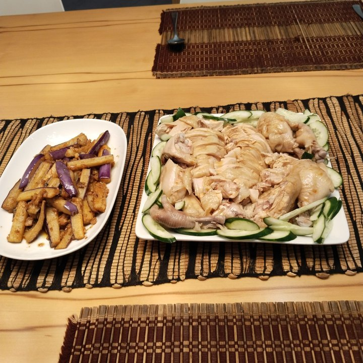
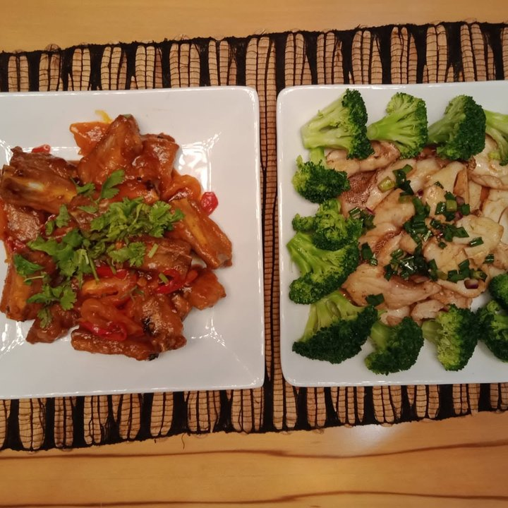
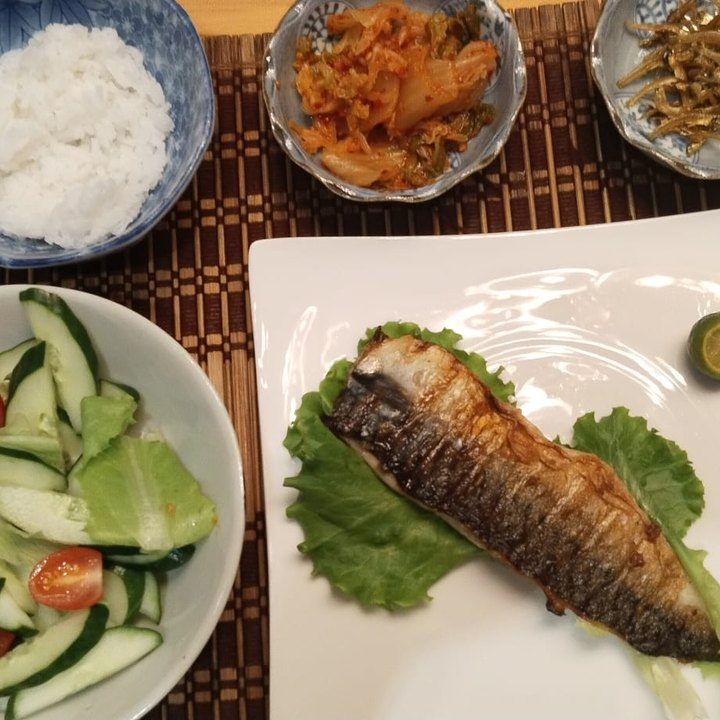
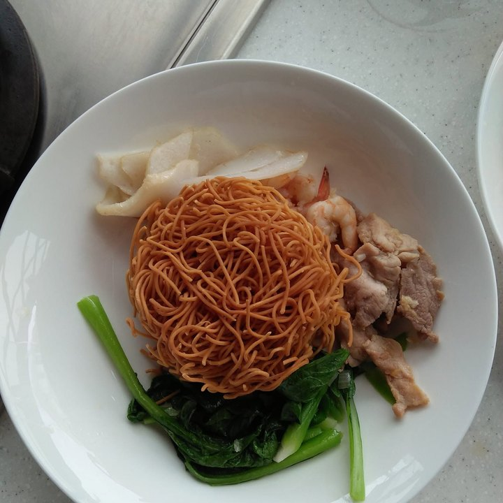

Filipino national · Chinese home cooking & household · Eight years in Singapore
Recommended by Esther, the family she works for now — a household she has largely run on her own, and nearly six years with one family before that.
Trust signals
Our strongest trust signal — a family she works for now, recommending her directly.
At a glance
The essentials
Available from
Around the end of October 2026. Esther is looking for her replacement now, and Judy moves on once that person is in place.
Nearly six years, one family
From September 2018 to September 2024 she was with a single Chinese family in a landed home — a couple and their two children, who were young adults by the time she left. Cooking and the general household.
Currently
With Esther’s family since November 2024 — a landed home, two grown boys and a large dog. The cooking, the laundry, the house, the garden, and the car.
How she works
Independently. Esther has worked long hours for most of the past eight months and the house has run anyway. Judy manages her own time and does not need to be told things twice — though she does want to be told once, plainly, what is wanted and how.
Why she’s moving on
The boys are grown and the household needs something different now, so the family are moving to a less experienced helper at a lower cost. Esther is clear that it is about the household’s needs, not about Judy’s work — and Judy has offered to spend a day or two showing her replacement the house.
Cooking
She plans the dinner menu herself and checks it with her employer, then cooks it — wonton noodles, chicken rice, steamed and grilled fish, braised ribs. The list of what she can cook is long. There are photographs below.
Beyond the house
She is good in the garden, and she washes the car. Both are part of her week at the moment.
The two months in 2024
Between the two long placements there is a short one, September to November 2024. It was a two-helper household and the working relationship between them did not settle. She asked to move on, and did.
Children
Mostly older children and young adults. The brief 2024 household had three small ones, aged six, four and one.
The dog
A 22kg golden doodle, and not an especially well-trained one. She walks him and showers him; grooming she is warier of. He has taken to her and sometimes sleeps outside her door.
Homes she has worked in
All three of her Singapore placements have been landed properties, households of four to five.
What her employer would flag
Her cleaning is good but not exacting. A household that wants everything spotless to the corner should say so plainly at the start — being told plainly is exactly how she works. She likes music on while she gets on with it.
Nationality
Filipino
Age
41
Photographs Judy took of her own cooking. She plans the dinner menu herself, checks it with her employer, and cooks it — this is what a week of that looks like.




What Esther told us, and what we think.
Judy has been with Esther’s family since November 2024 — a landed house, two grown boys, and a large dog. She cooks, does the laundry, keeps the house, looks after the garden and washes the car. Esther has worked long hours for most of the past eight months, and the house has run anyway. That is the recommendation in one sentence.
What Esther says about her: independent, to the point where you do not need to tell her things twice. Street smart, mature, professional. She plans the dinner menu herself and checks it. She manages her own time. What she asks for in return is to be told once, properly, what is wanted and how — and then it gets done.
The dog. He is a 22kg golden doodle and not an especially well-trained one. He grew on her, and she adapted. She walks him and showers him, though she is warier of the grooming. She is not the sort to sit and cuddle him — she looks after him properly and gets on with her day, and he has taken to her enough to sleep outside her door sometimes.
Why she is moving on: the boys are grown, the household’s needs have changed, and the family are moving to a less experienced helper at a lower cost. It is a decision about the household, not about Judy—and Judy has offered to spend a day or two showing her replacement how the house runs. Esther is looking now; Judy leaves once that person is found.
The one thing Esther would want you to know honestly: her cleaning is good, but it is not exacting. If you want a house kept spotless into every corner, say so at the start — being told plainly is precisely how she works best. She also likes music on while she works.
Before this family she spent nearly six years with one Chinese household in a landed home, September 2018 to September 2024, whose two children grew from teenagers into their twenties while she was there. Six years in one house is not a thing that happens by accident.
Between those two placements sits a two-month one, and we would rather explain it than leave you to find it on her record. It was a household with two helpers and the duties split between them. That arrangement did not settle, and she moved on. Everything either side of it is measured in years.
Where she’d thrive next: a household that will tell her plainly what it wants and then let her get on with it. She is at her best given a house to run rather than a list to follow.
Esther has offered to answer questions from interested families directly.
Tell us a little about your household and we’ll be in touch within 1–2 business days. We’ll only move forward if it feels like a genuine fit.